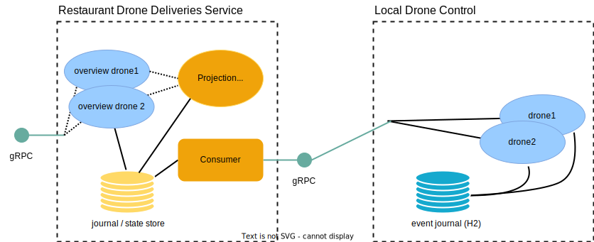

Coarse Grained Location Replication
In the previous step of the guide we implemented the PoP local control service keeping track of drone locations.
We also want to publish coarse grained location updates at a low frequency from the edge to a central cloud service.

In this step we will cover publishing and consuming those events, passing them to a stateful overview-version of the drone digital twin. We will use Akka Projection gRPC to do service-to-service events passing with an effectively once delivery guarantee, this without requiring a message broker in between services. The cloud and the many PoP services each has their own lifecycle and are deployed separately in different places.
We will then implement a gRPC service for querying the coarse grained location of the global set of drones in the cloud service.
Coarse grained location aggregation and publishing
We have already seen the additional CoarseGrainedLocationChanged event persisted in the previous step of the guide. Now we will update the local-drone-control service to also publish these aggregate events upstream to a cloud service so that it can keep a rough overview of where all drones are without needing to handle the global load of detailed and frequent updates from all drones.
Normally for Akka gRPC projections the consumer initiates the connection, but in edge scenarios it might be problematic because of firewalls not allowing the cloud to connect to each PoP. The normal consumer initiated connections also means that all producers must be known up front by the consumer.
To solve this the local control center push events to the cloud using Akka gRPC projection with producer push which means the control center will initiate the connection.
The actual pushing of events is implemented as a single actor behavior, if partitioning is needed for scaling that is also possible by letting multiple actors handle partitions of the entire stream of events from local drones.
- Scala
-
source
package local.drones import akka.actor.typed.{ ActorSystem, Behavior } import akka.cluster.sharding.typed.scaladsl.ShardedDaemonProcess import akka.grpc.GrpcClientSettings import akka.persistence.Persistence import akka.persistence.query.Offset import akka.persistence.query.typed.EventEnvelope import akka.persistence.r2dbc.query.scaladsl.R2dbcReadJournal import akka.projection.ProjectionBehavior import akka.projection.ProjectionId import akka.projection.eventsourced.scaladsl.EventSourcedProvider import akka.projection.grpc.producer.EventProducerSettings import akka.projection.grpc.producer.scaladsl.EventProducer import akka.projection.grpc.producer.scaladsl.EventProducer.EventProducerSource import akka.projection.grpc.producer.scaladsl.EventProducerPush import akka.projection.r2dbc.scaladsl.R2dbcProjection import org.slf4j.LoggerFactory import scala.concurrent.Future object DroneEvents { val logger = LoggerFactory.getLogger("local.drones.DroneEvents") val StreamId = "drone-events" def eventToCloudPushBehavior(settings: Settings)( implicit system: ActorSystem[_]): Behavior[ProjectionBehavior.Command] = { logger.info( "Pushing events to central cloud, origin id [{}]", settings.locationId) // turn events into a public protocol (protobuf) type before publishing val eventTransformation = EventProducer.Transformation.empty.registerAsyncEnvelopeMapper[ Drone.CoarseGrainedLocationChanged, proto.CoarseDroneLocation] { envelope => val event = envelope.event Future.successful( Some(proto.CoarseDroneLocation(Some(event.coordinates.toProto)))) } val eventProducer = EventProducerPush[Drone.Event]( // location id is unique and informative, so use it as producer origin id as well originId = settings.locationId, eventProducerSource = EventProducerSource[Drone.Event]( Drone.EntityKey.name, StreamId, eventTransformation, EventProducerSettings(system), // only push coarse grained coordinate changes producerFilter = envelope => envelope.event.isInstanceOf[Drone.CoarseGrainedLocationChanged]), GrpcClientSettings.fromConfig("central-drone-control")) // For scaling out the local service this would be split up in slices // and run across a cluster with sharded daemon process, now it is instead // a single projection actor pushing all event slices val maxSlice = Persistence(system).numberOfSlices - 1 ProjectionBehavior( R2dbcProjection.atLeastOnceFlow[Offset, EventEnvelope[Drone.Event]]( ProjectionId("drone-event-push", s"0-$maxSlice"), settings = None, // #startFromSnapshot sourceProvider = EventSourcedProvider .eventsBySlicesStartingFromSnapshots[Drone.State, Drone.Event]( system, R2dbcReadJournal.Identifier, eventProducer.eventProducerSource.entityType, 0, maxSlice, // start from latest drone snapshot and don't replay history { (state: Drone.State) => Drone.CoarseGrainedLocationChanged( state.coarseGrainedCoordinates.get) }), // #startFromSnapshot handler = eventProducer.handler())) } def initEventToCloudDaemonProcess(settings: Settings)( implicit system: ActorSystem[_]): Unit = { logger.info( "Pushing events to central cloud, origin id [{}]", settings.locationId) val nrOfEventProducers = system.settings.config.getInt("local-drone-control.nr-of-event-producers") val sliceRanges = Persistence(system).sliceRanges(nrOfEventProducers) // turn events into a public protocol (protobuf) type before publishing val eventTransformation = EventProducer.Transformation.empty.registerAsyncEnvelopeMapper[ Drone.CoarseGrainedLocationChanged, proto.CoarseDroneLocation] { envelope => val event = envelope.event Future.successful( Some(proto.CoarseDroneLocation(Some(event.coordinates.toProto)))) } val eventProducer = EventProducerPush[Drone.Event]( // location id is unique and informative, so use it as producer origin id as well originId = settings.locationId, eventProducerSource = EventProducerSource[Drone.Event]( Drone.EntityKey.name, StreamId, eventTransformation, EventProducerSettings(system), // only push coarse grained coordinate changes producerFilter = envelope => envelope.event.isInstanceOf[Drone.CoarseGrainedLocationChanged]), GrpcClientSettings.fromConfig("central-drone-control")) def projectionForPartition( partition: Int): Behavior[ProjectionBehavior.Command] = { val sliceRange = sliceRanges(partition) val minSlice = sliceRange.min val maxSlice = sliceRange.max ProjectionBehavior( R2dbcProjection.atLeastOnceFlow[Offset, EventEnvelope[Drone.Event]]( ProjectionId("drone-event-push", s"$minSlice-$maxSlice"), settings = None, sourceProvider = EventSourcedProvider .eventsBySlicesStartingFromSnapshots[Drone.State, Drone.Event]( system, R2dbcReadJournal.Identifier, eventProducer.eventProducerSource.entityType, minSlice, maxSlice, // start from latest drone snapshot and don't replay history { (state: Drone.State) => Drone.CoarseGrainedLocationChanged( state.coarseGrainedCoordinates.get) }), handler = eventProducer.handler())) } ShardedDaemonProcess(system).init( "drone-event-push", nrOfEventProducers, projectionForPartition) } } - Java
-
source
package local.drones; import akka.actor.typed.ActorSystem; import akka.actor.typed.Behavior; import akka.cluster.sharding.typed.javadsl.ShardedDaemonProcess; import akka.grpc.GrpcClientSettings; import akka.japi.Pair; import akka.persistence.Persistence; import akka.persistence.query.typed.EventEnvelope; import akka.persistence.r2dbc.query.javadsl.R2dbcReadJournal; import akka.projection.ProjectionBehavior; import akka.projection.ProjectionId; import akka.projection.eventsourced.javadsl.EventSourcedProvider; import akka.projection.grpc.producer.EventProducerSettings; import akka.projection.grpc.producer.javadsl.EventProducerPush; import akka.projection.grpc.producer.javadsl.EventProducerSource; import akka.projection.grpc.producer.javadsl.Transformation; import akka.projection.r2dbc.javadsl.R2dbcProjection; import java.util.List; import java.util.Optional; import java.util.concurrent.CompletableFuture; import org.slf4j.Logger; import org.slf4j.LoggerFactory; public class DroneEvents { private static final Logger logger = LoggerFactory.getLogger(DroneEvents.class); public static final String StreamId = "drone-events"; public static Behavior<ProjectionBehavior.Command> eventToCloudPushBehavior( ActorSystem<?> system, Settings settings) { logger.info("Pushing events to central cloud, origin id [{}]", settings.locationId); // turn events into a public protocol (protobuf) type before publishing var eventTransformation = Transformation.empty() .registerAsyncEnvelopeMapper( Drone.CoarseGrainedLocationChanged.class, (EventEnvelope<Drone.CoarseGrainedLocationChanged> envelope) -> { var event = envelope.event(); return CompletableFuture.completedFuture( Optional.of( local.drones.proto.CoarseDroneLocation.newBuilder() .setCoordinates(event.coordinates.toProto()) .build())); }); var eventProducer = EventProducerPush.create( // location id is unique and informative, so use it as producer origin id as well settings.locationId, new EventProducerSource( Drone.ENTITY_KEY.name(), StreamId, eventTransformation, EventProducerSettings.create(system), // only push coarse grained coordinate changes envelope -> envelope.event() instanceof Drone.CoarseGrainedLocationChanged), GrpcClientSettings.fromConfig("central-drone-control", system)); // For scaling out the local service this would be split up in slices // and run across a cluster with sharded daemon process, now it is instead // a single projection actor pushing all event slices var maxSlice = Persistence.get(system).numberOfSlices() - 1; return ProjectionBehavior.create( R2dbcProjection.atLeastOnceFlow( ProjectionId.of("drone-event-push", "0-" + maxSlice), Optional.empty(), // #startFromSnapshot EventSourcedProvider.eventsBySlicesStartingFromSnapshots( system, R2dbcReadJournal.Identifier(), eventProducer.eventProducerSource().entityType(), 0, maxSlice, // start from latest drone snapshot and don't replay history (Drone.State state) -> new Drone.CoarseGrainedLocationChanged(state.coarseGrainedCoordinates().get())), // #startFromSnapshot eventProducer.handler(system), system)); } public static void initEventToCloudDaemonProcess(ActorSystem<Void> system, Settings settings) { var nrOfEventProducers = system.settings().config().getInt("local-drone-control.nr-of-event-producers"); var sliceRanges = Persistence.get(system).getSliceRanges(nrOfEventProducers); // turn events into a public protocol (protobuf) type before publishing var eventTransformation = Transformation.empty() .registerAsyncEnvelopeMapper( Drone.CoarseGrainedLocationChanged.class, (EventEnvelope<Drone.CoarseGrainedLocationChanged> envelope) -> { var event = envelope.event(); return CompletableFuture.completedFuture( Optional.of( local.drones.proto.CoarseDroneLocation.newBuilder() .setCoordinates(event.coordinates.toProto()) .build())); }); var eventProducer = EventProducerPush.create( // location id is unique and informative, so use it as producer origin id as well settings.locationId, new EventProducerSource( Drone.ENTITY_KEY.name(), StreamId, eventTransformation, EventProducerSettings.create(system), // only push coarse grained coordinate changes envelope -> envelope.event() instanceof Drone.CoarseGrainedLocationChanged), GrpcClientSettings.fromConfig("central-drone-control", system)); ShardedDaemonProcess.get(system) .init( ProjectionBehavior.Command.class, "drone-event-push", nrOfEventProducers, idx -> projectionForPartition(system, eventProducer, sliceRanges, idx)); } private static Behavior<ProjectionBehavior.Command> projectionForPartition( ActorSystem<?> system, EventProducerPush<Object> eventProducer, List<Pair<Integer, Integer>> sliceRanges, int partition) { var sliceRange = sliceRanges.get(partition); var minSlice = sliceRange.first(); var maxSlice = sliceRange.second(); return ProjectionBehavior.create( R2dbcProjection.atLeastOnceFlow( ProjectionId.of("drone-event-push", minSlice + "-" + maxSlice), Optional.empty(), EventSourcedProvider.eventsBySlicesStartingFromSnapshots( system, R2dbcReadJournal.Identifier(), eventProducer.eventProducerSource().entityType(), minSlice, maxSlice, (Drone.State state) -> new Drone.CoarseGrainedLocationChanged(state.coarseGrainedCoordinates().get())), eventProducer.handler(system), system)); } }
Two important things to note:
- A producer filter is applied to only push
CoarseGrainedLocationChangedand not the fine-grainedPositionUpdatedevents. - The internal domain representation of
CoarseGrainedLocationChangedis transformed into an explicit public protocol protobuf messagelocal.drones.proto.CoarseDroneLocationmessage, for loose coupling between consumer and producer and easier evolution over time without breaking wire compatibility. - The service defines a “location name” which is a unique identifier of the PoP in the format
country/city/part-of-city, it is used asoriginIdfor the producer push stream, identifying where the stream of events come from.
Snapshots as starting points
One optimization to reduce the amount of events sent over the network if the local control service has been disconnected from the central cloud service is to use snapshots as starting points. Only delivering the latest coarse grained coordinate is enough, so we create a snapshot for each CoarseGrainedLocationChanged event:
- Scala
-
source
.snapshotWhen { (_, event, _) => event.isInstanceOf[CoarseGrainedLocationChanged] } - Java
-
source
@Override public boolean shouldSnapshot(State state, Event event, long sequenceNr) { return event instanceof CoarseGrainedLocationChanged; }
The Projection for pushing the events is using eventsBySlicesStartingFromSnapshots:
- Scala
-
source
sourceProvider = EventSourcedProvider .eventsBySlicesStartingFromSnapshots[Drone.State, Drone.Event]( system, R2dbcReadJournal.Identifier, eventProducer.eventProducerSource.entityType, 0, maxSlice, // start from latest drone snapshot and don't replay history { (state: Drone.State) => Drone.CoarseGrainedLocationChanged( state.coarseGrainedCoordinates.get) }), - Java
-
source
EventSourcedProvider.eventsBySlicesStartingFromSnapshots( system, R2dbcReadJournal.Identifier(), eventProducer.eventProducerSource().entityType(), 0, maxSlice, // start from latest drone snapshot and don't replay history (Drone.State state) -> new Drone.CoarseGrainedLocationChanged(state.coarseGrainedCoordinates().get())),
Note that the Drone.State, i.e. the snapshot, is transformed to an event. This snapshot event should represent a possible starting point for the consumer. In this case it represents the latest coarse grained coordinate of the drone.
Producer Push Destination
The producer push destination is a gRPC service where producers push events, the events are persisted in a local journal as is, or after a transformation to an internal representation. For more details see Akka gRPC projection with producer push documentation.
We’ll implement the producer push destination in a new separate service, intended to run as a clustered deployment in the cloud, where all the local control services will push their aggregate events, the “Restaurant Drone Deliveries Service”.
In addition to accepting the events, we pick the local control center location (which is in the format country/city/part-of-city) passed as producer originId on producer connection, and put it in a tag for the event.
The setup logic looks like this:
- Scala
-
source
val DroneEventStreamId = "drone-events" // The type key used on the producer side is written directly into our journal so we // use it here as well when we consume the events private val ProducerEntityType = "Drone" def pushedEventsDestination( implicit system: ActorSystem[_]): EventProducerPushDestination = EventProducerPushDestination( DroneEventStreamId, local.drones.proto.DroneEventsProto.javaDescriptor.getFile :: Nil) .withTransformationForOrigin((origin, _) => EventProducerPushDestination.Transformation.empty // tag all events with the location name of the local control it came from) .registerTagMapper[local.drones.proto.CoarseDroneLocation](_ => Set("location:" + origin))) - Java
-
source
// Note: stream id used in producer for the drone events public static final String DRONE_EVENT_STREAM_ID = "drone-events"; // The type key used on the producer side is written directly into our journal so we // use it here as well when we consume the events private static final String PRODUCER_ENTITY_TYPE = "Drone"; public static EventProducerPushDestination pushedEventsDestination(ActorSystem<?> system) { return EventProducerPushDestination.create( DRONE_EVENT_STREAM_ID, Collections.singletonList(local.drones.proto.DroneEvents.getDescriptor()), system) .withTransformationForOrigin( (origin, metadataa) -> akka.projection.grpc.consumer.javadsl.Transformation.empty() // tag all events with the location name of the local control it came from .registerTagMapper( local.drones.proto.CoarseDroneLocation.class, envelope -> Collections.singleton("location:" + origin))); }
The returned PartialFunctionFunction is an Akka HTTP gRPC request handler that can be bound directly in an HTTP server or combined with multiple other request handlers and then bound as a single server:
- Scala
-
source
val service = ServiceHandler.concatOrNotFound( DroneOverviewServiceHandler.partial(droneOverviewService), RestaurantDeliveriesServiceHandler.partial(restaurantDeliveriesService), ChargingStationServiceHandler.partial(chargingStationService), eventPullHandler, eventPushHandler, ServerReflection.partial( List( DroneOverviewService, RestaurantDeliveriesService, ChargingStationService))) val bound = Http(system).newServerAt(interface, port).bind(service) - Java
-
source
@SuppressWarnings("unchecked") var service = ServiceHandler.concatOrNotFound( DroneOverviewServiceHandlerFactory.create(droneOverviewService, system), RestaurantDeliveriesServiceHandlerFactory.create(restaurantDeliveriesService, system), ChargingStationServiceHandlerFactory.create(chargingStationService, system), eventPullHandler, eventPushHandler, ServerReflection.create( List.of( DroneOverviewService.description, RestaurantDeliveriesService.description, ChargingStationService.description), system)); var bound = Http.get(system).newServerAt(host, port).bind(service);
As persistent storage for the event journal we are using PostgreSQL, we cannot use H2 like the local drone control service, as the central cloud service is clustered and needs an external database that can accept connections from multiple separate cluster nodes.
Config to use PostgreSQL looks like this:
- Scala
-
source
akka.persistence.r2dbc.connection-factory = ${akka.persistence.r2dbc.postgres} akka { persistence { journal.plugin = "akka.persistence.r2dbc.journal" snapshot-store.plugin = "akka.persistence.r2dbc.snapshot" state.plugin = "akka.persistence.r2dbc.state" r2dbc { connection-factory { host = "localhost" host = ${?DB_HOST} port = 5432 database = "postgres" user = "postgres" user = ${?DB_USER} password = "postgres" password = ${?DB_PASSWORD} } // #locationColumn state { additional-columns { "CentralDrone" = ["central.drones.LocationColumn"] } } // #locationColumn } } projection.r2dbc { offset-store { # only timestamp based offsets offset-table = "" } } } // #firehose akka.projection.grpc { producer { # use the firehose for order events so that the local-drone-control consumers # shares the same firehose instead of each lead to load on the database query-plugin-id = "akka.persistence.query.events-by-slice-firehose" } } akka.persistence.query.events-by-slice-firehose { delegate-query-plugin-id = "akka.persistence.r2dbc.query" } // #firehose - Java
-
source
akka.persistence.r2dbc.connection-factory = ${akka.persistence.r2dbc.postgres} akka { persistence { journal.plugin = "akka.persistence.r2dbc.journal" snapshot-store.plugin = "akka.persistence.r2dbc.snapshot" state.plugin = "akka.persistence.r2dbc.state" r2dbc { connection-factory { host = "localhost" host = ${?DB_HOST} port = 5432 database = "postgres" user = "postgres" user = ${?DB_USER} password = "postgres" password = ${?DB_PASSWORD} } // #locationColumn state { additional-columns { "CentralDrone" = ["central.drones.LocationColumn"] } } // #locationColumn } } projection.r2dbc { offset-store { # only timestamp based offsets offset-table = "" } } } // #firehose akka.projection.grpc { producer { # use the firehose for order events so that the local-drone-control consumers # shares the same firehose instead of each lead to load on the database query-plugin-id = "akka.persistence.query.events-by-slice-firehose" } } akka.persistence.query.events-by-slice-firehose { delegate-query-plugin-id = "akka.persistence.r2dbc.query" } // #firehose
Consuming the pushed events
What we have set up only means that the pushed events are written into our local journal, to do something useful with the events we need to run a projection consuming the events. We’ll turn them into commands and send them to an entity.
The projection is run as Akka Sharded Daemon Process to partition the global stream of events among multiple consumers balanced over the nodes of the restaurant-drone-deliveries-service.
The handler of the projection turns the protobuf message CoarseDroneLocation pushed by the producer and stored in the local journal into a Drone.UpdateLocation and sends it over Akka Cluster Sharding to the right drone overview entity:
- Scala
-
source
def initPushedEventsConsumer(implicit system: ActorSystem[_]): Unit = { implicit val askTimeout: Timeout = system.settings.config .getDuration("restaurant-drone-deliveries-service.drone-ask-timeout") .toScala val sharding = ClusterSharding(system) def sourceProvider(sliceRange: Range): SourceProvider[ Offset, EventEnvelope[local.drones.proto.CoarseDroneLocation]] = EventSourcedProvider .eventsBySlices[local.drones.proto.CoarseDroneLocation]( system, readJournalPluginId = R2dbcReadJournal.Identifier, ProducerEntityType, sliceRange.min, sliceRange.max) def projection(sliceRange: Range) : Projection[EventEnvelope[local.drones.proto.CoarseDroneLocation]] = { val minSlice = sliceRange.min val maxSlice = sliceRange.max val projectionId = ProjectionId("DroneEvents", s"drone-$minSlice-$maxSlice") val handler : Handler[EventEnvelope[local.drones.proto.CoarseDroneLocation]] = { (envelope: EventEnvelope[local.drones.proto.CoarseDroneLocation]) => logger.info( "Saw projected event: {}-{}: {}", envelope.persistenceId, envelope.sequenceNr, envelope.eventOption) // Drone id without producer entity key val droneId = PersistenceId.extractEntityId(envelope.persistenceId) // same drone but different entity type (our Drone representation) val entityRef = sharding.entityRefFor(Drone.EntityKey, droneId) envelope.event match { case local.drones.proto.CoarseDroneLocation(coordinates, _) => // we have encoded origin in a tag, extract it val originName = envelope.tags .find(_.startsWith("location:")) .get .drop("location:".length) entityRef.askWithStatus( Drone.UpdateLocation( originName, CoarseGrainedCoordinates.fromProto(coordinates.get), _)) case unknown => throw new RuntimeException( s"Unknown event type: ${unknown.getClass}") } } R2dbcProjection.atLeastOnceAsync( projectionId, settings = None, sourceProvider(sliceRange), handler = () => handler) } // Split the slices into N ranges val numberOfSliceRanges: Int = system.settings.config.getInt( "restaurant-drone-deliveries-service.drones.projections-slice-count") val sliceRanges = EventSourcedProvider.sliceRanges( system, R2dbcReadJournal.Identifier, numberOfSliceRanges) ShardedDaemonProcess(system).init( name = "LocalDronesProjection", numberOfInstances = sliceRanges.size, behaviorFactory = i => ProjectionBehavior(projection(sliceRanges(i))), stopMessage = ProjectionBehavior.Stop) } - Java
-
source
private static class LocationHandler extends Handler<EventEnvelope<CoarseDroneLocation>> { private final ClusterSharding sharding; private final Duration askTimeout; public LocationHandler(ActorSystem<?> system) { this.sharding = ClusterSharding.get(system); this.askTimeout = system .settings() .config() .getDuration("restaurant-drone-deliveries-service.drone-ask-timeout"); } @Override public CompletionStage<Done> process(EventEnvelope<CoarseDroneLocation> envelope) { logger.info( "Saw projected event: {}-{}: {}", envelope.persistenceId(), envelope.sequenceNr(), envelope.eventOption()); // Drone id without producer entity key var droneId = PersistenceId.extractEntityId(envelope.persistenceId()); // same drone id as local but different entity type (our Drone overview representation) var entityRef = sharding.entityRefFor(Drone.ENTITY_KEY, droneId); // we have encoded origin in a tag, extract it var originName = envelope.getTags().stream() .filter(tag -> tag.startsWith("location:")) .findFirst() .get() .substring("location:".length()); return entityRef.askWithStatus( replyTo -> new Drone.UpdateLocation( originName, CoarseGrainedCoordinates.fromProto(envelope.event().getCoordinates()), replyTo), askTimeout); } } ; public static void initPushedEventsConsumer(ActorSystem<?> system) { // Split the slices into N ranges var numberOfSliceRanges = system .settings() .config() .getInt("restaurant-drone-deliveries-service.drones.projections-slice-count"); var sliceRanges = EventSourcedProvider.sliceRanges( system, R2dbcReadJournal.Identifier(), numberOfSliceRanges); ShardedDaemonProcess.get(system) .init( ProjectionBehavior.Command.class, "LocalDronesProjection", sliceRanges.size(), i -> ProjectionBehavior.create(projection(system, sliceRanges.get(i))), ProjectionBehavior.stopMessage()); } private static Projection<EventEnvelope<CoarseDroneLocation>> projection( ActorSystem<?> system, Pair<Integer, Integer> sliceRange) { var minSlice = sliceRange.first(); var maxSlice = sliceRange.second(); var projectionId = ProjectionId.of("DroneEvents", "drone-" + minSlice + "-" + maxSlice); SourceProvider<Offset, EventEnvelope<CoarseDroneLocation>> sourceProvider = EventSourcedProvider.eventsBySlices( system, R2dbcReadJournal.Identifier(), PRODUCER_ENTITY_TYPE, sliceRange.first(), sliceRange.second()); return R2dbcProjection.atLeastOnceAsync( projectionId, Optional.empty(), sourceProvider, () -> new LocationHandler(system), system); }
Durable State Drone Overview
For the cloud representation of the drones, only containing the rough location, we use Durable State, which instead of event sourcing is more like a key-value storage, where each actor command can lead to persisting the complete state of the actor.
Commands
The cloud drone entity supports two commands, much like the PoP drone entity. The commands are UpdateLocation and GetState:
- Scala
-
source
sealed trait Command extends CborSerializable final case class UpdateLocation( locationName: String, coarseGrainedCoordinates: CoarseGrainedCoordinates, replyTo: ActorRef[StatusReply[Done]]) extends Command final case class GetState(replyTo: ActorRef[State]) extends Command - Java
-
source
interface Command extends CborSerializable {} public static final class UpdateLocation implements Command { public final String locationName; public final CoarseGrainedCoordinates coarseGrainedCoordinates; public final ActorRef<StatusReply<Done>> replyTo; public UpdateLocation( String locationName, CoarseGrainedCoordinates coarseGrainedCoordinates, ActorRef<StatusReply<Done>> replyTo) { this.locationName = locationName; this.coarseGrainedCoordinates = coarseGrainedCoordinates; this.replyTo = replyTo; } } public static final class GetState implements Command { public final ActorRef<State> replyTo; @JsonCreator public GetState(ActorRef<State> replyTo) { this.replyTo = replyTo; } }
State
The state of the drone contains the location name of the PoP it talked to last, the coarse grained coordinates it last reported if it did and the timestamp when that happened:
- Scala
-
source
final case class State( locationName: String, currentLocation: Option[CoarseGrainedCoordinates], lastChange: Instant) extends CborSerializable - Java
-
source
public static final class State implements CborSerializable { public String locationName; public Optional<CoarseGrainedCoordinates> currentLocation; public Instant lastChange; public State( String locationName, Optional<CoarseGrainedCoordinates> currentLocation, Instant lastChange) { this.locationName = locationName; this.currentLocation = currentLocation; this.lastChange = lastChange; } }
The initial state, signifying that the durable state newer saw any update uses a special location “unknown”, and an NoneOptional.empty() for its location.
- Scala
-
source
private val emptyState = State("unknown", None, Instant.EPOCH) - Java
-
source
@Override public State emptyState() { return new State("unknown", Optional.empty(), Instant.EPOCH); }
Command handler
The command handler turns UpdateLocation commands into an update to its state and persists that and replies with the current state for the GetState command:
- Scala
-
source
private def onCommand(context: ActorContext[Command])( state: State, command: Command): Effect[State] = command match { case UpdateLocation(locationName, coordinates, replyTo) => context.log.info( "Updating location to [{}], [{}]", locationName, coordinates) Effect .persist( state.copy( locationName = locationName, currentLocation = Some(coordinates))) .thenReply(replyTo)(_ => StatusReply.ack()) case GetState(replyTo) => Effect.reply(replyTo)(state) } - Java
-
source
@Override public CommandHandler<Command, State> commandHandler() { return newCommandHandlerBuilder() .forAnyState() .onCommand(UpdateLocation.class, this::onUpdateLocation) .onCommand( GetState.class, (state, command) -> // reply with defensive copy since state is mutable Effect() .reply( command.replyTo, new State(state.locationName, state.currentLocation, state.lastChange))) .build(); } private Effect<State> onUpdateLocation(State state, UpdateLocation command) { context .getLog() .info( "Updating location to [{}], [{}]", command.locationName, command.coarseGrainedCoordinates); state.locationName = command.locationName; state.currentLocation = Optional.of(command.coarseGrainedCoordinates); state.lastChange = Instant.now(); return Effect().persist(state).thenReply(command.replyTo, updatedState -> StatusReply.ack()); }
Storing query representation for easier querying
The Akka R2DBC plugin contains a feature for writing durable state query representation in the same transaction as the state update. We’ll use that to write the locationName to a queryable column in the PostgreSQL database.
First step is to add a location column to the durable state table schema:
- Scala
-
source
CREATE TABLE IF NOT EXISTS durable_state ( slice INT NOT NULL, entity_type VARCHAR(255) NOT NULL, persistence_id VARCHAR(255) NOT NULL, revision BIGINT NOT NULL, db_timestamp timestamp with time zone NOT NULL, state_ser_id INTEGER NOT NULL, state_ser_manifest VARCHAR(255), state_payload BYTEA NOT NULL, tags TEXT ARRAY, -- additional column location VARCHAR(255), PRIMARY KEY(persistence_id, revision) ); - Java
-
source
CREATE TABLE IF NOT EXISTS durable_state ( slice INT NOT NULL, entity_type VARCHAR(255) NOT NULL, persistence_id VARCHAR(255) NOT NULL, revision BIGINT NOT NULL, db_timestamp timestamp with time zone NOT NULL, state_ser_id INTEGER NOT NULL, state_ser_manifest VARCHAR(255), state_payload BYTEA NOT NULL, tags TEXT ARRAY, -- additional column location VARCHAR(255), PRIMARY KEY(persistence_id, revision) );
We then implement AdditionalColumn[Drone.State, String]AdditionalColumn<Drone.State, String>:
- Scala
-
source
/** * Write local drone control location name column for querying drone locations per control location */ final class LocationColumn extends AdditionalColumn[Drone.State, String] { override def columnName: String = "location" override def bind(upsert: AdditionalColumn.Upsert[Drone.State]) : AdditionalColumn.Binding[String] = AdditionalColumn.BindValue(upsert.value.locationName) } - Java
-
source
package central.drones; import akka.persistence.r2dbc.state.javadsl.AdditionalColumn; /** * Write local drone control location name column for querying drone locations per control location */ public final class LocationColumn extends AdditionalColumn<Drone.State, String> { @Override public Class<String> fieldClass() { return String.class; } @Override public String columnName() { return "location"; } @Override public Binding<String> bind(Upsert<Drone.State> upsert) { return AdditionalColumn.bindValue(upsert.value().locationName); } }
Finally, we add configuration to make Akka Persistence R2DBC use the LocationColumn when writing state:
- Scala
-
source
state { additional-columns { "CentralDrone" = ["central.drones.LocationColumn"] } } - Java
-
source
state { additional-columns { "CentralDrone" = ["central.drones.LocationColumn"] } }
gRPC service
To make it possible for users of our service to query the drone overviews we define a gRPC service:
- Scala
-
source
syntax = "proto3"; option java_multiple_files = true; option java_package = "central.drones.proto"; package central.drones; import "common/coordinates.proto"; service DroneOverviewService { rpc GetDroneOverview(GetDroneOverviewRequest) returns (GetDroneOverviewResponse) {} rpc GetCoarseDroneLocations(CoarseDroneLocationsRequest) returns (CoarseDroneLocationsResponse) {} } message CoarseDroneLocationsRequest { // name of the location string location = 1; } message CoarseDroneLocationsResponse { repeated CoarseDroneLocations coarse_locations = 1; } message CoarseDroneLocations { common.Coordinates coordinates = 1; repeated string drones = 2; } message GetDroneOverviewRequest { string drone_id = 1; } message GetDroneOverviewResponse { string location_name = 1; double coarse_latitude = 2; double coarse_longitude = 3; } - Java
-
source
syntax = "proto3"; option java_multiple_files = true; option java_package = "central.drones.proto"; package central.drones; import "common/coordinates.proto"; service DroneOverviewService { rpc GetDroneOverview(GetDroneOverviewRequest) returns (GetDroneOverviewResponse) {} rpc GetCoarseDroneLocations(CoarseDroneLocationsRequest) returns (CoarseDroneLocationsResponse) {} } message CoarseDroneLocationsRequest { // name of the location string location = 1; } message CoarseDroneLocationsResponse { repeated CoarseDroneLocations coarse_locations = 1; } message CoarseDroneLocations { common.Coordinates coordinates = 1; repeated string drones = 2; } message GetDroneOverviewRequest { string drone_id = 1; } message GetDroneOverviewResponse { string location_name = 1; double coarse_latitude = 2; double coarse_longitude = 3; }
And implement the service interface Akka gRPC generates for it.
The getDroneOverview method asks the drone entity directly about its current state.
The getCoarseDroneLocations is a bit more involved, querying using the locations column, and then using the Akka Serialization infrastructure to deserialize the found drone State instances. Grouping the drones in the same coarse grained location and finally turning that map into a protobuf response message:
- Scala
-
source
package central.drones import scala.concurrent.ExecutionContext import scala.concurrent.Future import akka.actor.typed.ActorSystem import akka.cluster.sharding.typed.scaladsl.ClusterSharding import akka.grpc.GrpcServiceException import akka.persistence.r2dbc.session.scaladsl.R2dbcSession import akka.persistence.typed.PersistenceId import akka.serialization.SerializationExtension import akka.util.Timeout import central.DeliveriesSettings import central.drones.proto.DroneOverviewService import central.drones.proto.GetDroneOverviewRequest import central.drones.proto.GetDroneOverviewResponse import io.grpc.Status import org.slf4j.LoggerFactory class DroneOverviewServiceImpl( system: ActorSystem[_], settings: DeliveriesSettings) extends DroneOverviewService { private val logger = LoggerFactory.getLogger(getClass) private implicit val ec: ExecutionContext = system.executionContext private implicit val timeout: Timeout = settings.droneAskTimeout private val serialization = SerializationExtension(system) private val sharding = ClusterSharding(system) private val findByLocationSql = "SELECT persistence_id, state_ser_id, state_ser_manifest, state_payload " + "FROM durable_state " + "WHERE location = $1" override def getCoarseDroneLocations(in: proto.CoarseDroneLocationsRequest) : Future[proto.CoarseDroneLocationsResponse] = { // query against additional columns for drone logger.info("List drones for location {}", in.location) R2dbcSession.withSession(system) { session => session .select( session.createStatement(findByLocationSql).bind(0, in.location)) { row => val serializerId = row.get("state_ser_id", classOf[java.lang.Integer]) val serializerManifest = row.get("state_ser_manifest", classOf[String]) val payload = row.get("state_payload", classOf[Array[Byte]]) val state = serialization .deserialize(payload, serializerId, serializerManifest) .get .asInstanceOf[Drone.State] val droneId = PersistenceId.extractEntityId( row.get("persistence_id", classOf[String])) state.currentLocation.map(coordinates => (droneId, coordinates)) } .map { maybeLocations => val locations = maybeLocations.flatten if (locations.isEmpty) throw new GrpcServiceException(Status.NOT_FOUND) else { val byLocation = locations.groupMap { case (_, coarse) => coarse } { case (droneId, _) => droneId } proto.CoarseDroneLocationsResponse(byLocation.map { case (location, entries) => proto.CoarseDroneLocations( Some(common.proto .Coordinates(location.latitude, location.longitude)), entries) }.toVector) } } } } override def getDroneOverview( in: GetDroneOverviewRequest): Future[GetDroneOverviewResponse] = { // query against additional columns for drone logger.info("Get drone overview for drone {}", in.droneId) val entityRef = sharding.entityRefFor(Drone.EntityKey, in.droneId) val reply: Future[Drone.State] = entityRef.ask(Drone.GetState(_)) reply.map(state => GetDroneOverviewResponse( locationName = state.locationName, coarseLatitude = state.currentLocation.map(_.latitude).getOrElse(0.0), coarseLongitude = state.currentLocation.map(_.longitude).getOrElse(0.0))) } } - Java
-
source
package central.drones; import akka.actor.typed.ActorSystem; import akka.cluster.sharding.typed.javadsl.ClusterSharding; import akka.grpc.GrpcServiceException; import akka.japi.Pair; import akka.persistence.r2dbc.session.javadsl.R2dbcSession; import akka.persistence.typed.PersistenceId; import akka.serialization.Serialization; import akka.serialization.SerializationExtension; import central.CoarseGrainedCoordinates; import central.DeliveriesSettings; import central.drones.proto.*; import io.grpc.Status; import java.util.*; import java.util.concurrent.CompletionStage; import java.util.stream.Collectors; import org.slf4j.Logger; import org.slf4j.LoggerFactory; public final class DroneOverviewServiceImpl implements DroneOverviewService { private Logger logger = LoggerFactory.getLogger(DroneOverviewServiceImpl.class); private final ActorSystem<?> system; private final DeliveriesSettings settings; private final Serialization serialization; private final ClusterSharding sharding; private static final String FIND_BY_LOCATION_SQL = "SELECT persistence_id, state_ser_id, state_ser_manifest, state_payload " + "FROM durable_state " + "WHERE location = $1"; public DroneOverviewServiceImpl(ActorSystem<?> system, DeliveriesSettings settings) { this.system = system; this.settings = settings; this.serialization = SerializationExtension.get(system); this.sharding = ClusterSharding.get(system); } @Override public CompletionStage<GetDroneOverviewResponse> getDroneOverview(GetDroneOverviewRequest in) { logger.info("Get drone overview for drone {}", in.getDroneId()); var entityRef = sharding.entityRefFor(Drone.ENTITY_KEY, in.getDroneId()); CompletionStage<Drone.State> response = entityRef.ask(Drone.GetState::new, settings.droneAskTimeout); return response.thenApply( state -> { if (state.currentLocation.isPresent()) return GetDroneOverviewResponse.newBuilder() .setLocationName(state.locationName) .setCoarseLatitude(state.currentLocation.get().latitude) .setCoarseLongitude(state.currentLocation.get().longitude) .build(); else throw new GrpcServiceException( Status.NOT_FOUND.withDescription("No location known for " + in.getDroneId())); }); } @Override public CompletionStage<CoarseDroneLocationsResponse> getCoarseDroneLocations( CoarseDroneLocationsRequest in) { // query against additional columns for drone logger.info("List drones for location {}", in.getLocation()); CompletionStage<List<Pair<CoarseGrainedCoordinates, String>>> queryResult = R2dbcSession.withSession( system, session -> session.select( session.createStatement(FIND_BY_LOCATION_SQL).bind(0, in.getLocation()), row -> { var serializerId = row.get("state_ser_id", Integer.class); var serializerManifest = row.get("state_ser_manifest", String.class); var payload = row.get("state_payload", byte[].class); var state = (Drone.State) serialization .deserialize(payload, serializerId, serializerManifest) .get(); var droneId = PersistenceId.extractEntityId(row.get("persistence_id", String.class)); // we expect it to always be present var coordinates = state.currentLocation.get(); return Pair.create(coordinates, droneId); })); return queryResult.thenApply( (List<Pair<CoarseGrainedCoordinates, String>> droneIdAndLocations) -> { if (droneIdAndLocations.isEmpty()) throw new GrpcServiceException(Status.NOT_FOUND); else { // group drones by coarse location Map<CoarseGrainedCoordinates, Set<String>> byLocation = droneIdAndLocations.stream() .collect( Collectors.toMap( Pair::first, pair -> new HashSet<>(Collections.singletonList(pair.second())), (existingSet, newSet) -> { existingSet.addAll(newSet); return existingSet; })); // turn into response protobuf message var protoEntries = byLocation.entrySet().stream() .map( entry -> CoarseDroneLocations.newBuilder() .setCoordinates(entry.getKey().toProto()) .addAllDrones(entry.getValue()) .build()) .collect(Collectors.toList()); return CoarseDroneLocationsResponse.newBuilder() .addAllCoarseLocations(protoEntries) .build(); } }); } }
Finally, we need to start the HTTP server, making service implementation available for calls from drones:
- Scala
-
source
val service = ServiceHandler.concatOrNotFound( DroneOverviewServiceHandler.partial(droneOverviewService), RestaurantDeliveriesServiceHandler.partial(restaurantDeliveriesService), ChargingStationServiceHandler.partial(chargingStationService), eventPullHandler, eventPushHandler, ServerReflection.partial( List( DroneOverviewService, RestaurantDeliveriesService, ChargingStationService))) val bound = Http(system).newServerAt(interface, port).bind(service) - Java
-
source
@SuppressWarnings("unchecked") var service = ServiceHandler.concatOrNotFound( DroneOverviewServiceHandlerFactory.create(droneOverviewService, system), RestaurantDeliveriesServiceHandlerFactory.create(restaurantDeliveriesService, system), ChargingStationServiceHandlerFactory.create(chargingStationService, system), eventPullHandler, eventPushHandler, ServerReflection.create( List.of( DroneOverviewService.description, RestaurantDeliveriesService.description, ChargingStationService.description), system)); var bound = Http.get(system).newServerAt(host, port).bind(service);
Running the sample
The complete sample can be downloaded from GitHub, but note that it also includes the next steps of the guide:
- Scala drone-scala.zip
- Java drone-java.zip
As this service consumes events from the service built in the previous step, start the local-drone-control service first:
sbt run
mvn compile exec:exec
Then start the drone-restaurant-deliveries-service.
As the service needs a PostgreSQL instance running, start that up in a docker container and create the database schema:
docker compose up --wait
docker exec -i postgres_db psql -U postgres -t < ddl-scripts/create_tables.sql
Then start the service:
sbt -Dconfig.resource=local1.conf run
And optionally one or two more Akka cluster nodes, but note that the local drone controls are statically configured to the gRPC port of the first and will only publish events to that node.
sbt -Dconfig.resource=local2.conf run
sbt -Dconfig.resource=local3.conf run
mvn compile exec:exec -DAPP_CONFIG=local1.conf
And optionally one or two more Akka cluster nodes, but note that the local drone controls are statically configured to the gRPC port of the first and will only publish events to that node.
mvn compile exec:exec -DAPP_CONFIG=local2.conf
mvn compile exec:exec -DAPP_CONFIG=local3.conf
Now update one or more drones a few times with grpcurl against the local-drone-control:
grpcurl -d '{"drone_id":"drone1", "coordinates": {"longitude": 18.07125, "latitude": 59.31834}, "altitude": 5}' -plaintext 127.0.0.1:8080 local.drones.DroneService.ReportLocation
grpcurl -d '{"drone_id":"drone1", "coordinates": {"longitude": 18.08125, "latitude": 59.41834}, "altitude": 10}' -plaintext 127.0.0.1:8080 local.drones.DroneService.ReportLocation
grpcurl -d '{"drone_id":"drone2", "coordinates": {"longitude": 18.07125, "latitude": 59.41834}, "altitude": 8 }' -plaintext 127.0.0.1:8080 local.drones.DroneService.ReportLocation
grpcurl -d '{"drone_id":"drone2", "coordinates": {"longitude": 18.07125, "latitude": 59.41834}, "altitude": 8 }' -plaintext 127.0.0.1:8080 local.drones.DroneService.ReportLocation
grpcurl -d '{"drone_id":"drone2", "coordinates": {"longitude": 18.08114, "latitude": 59.42122}, "altitude": 8 }' -plaintext 127.0.0.1:8080 local.drones.DroneService.ReportLocation
Then query the cloud service:
grpcurl -d '{"location":"sweden/stockholm/kungsholmen"}' -plaintext localhost:8101 central.drones.DroneOverviewService/GetCoarseDroneLocations
If you posted the drone location updates above you should see the two drones listed at the same coarse grained coordinates.
You can also query the individual drones for their specific coarse grained location:
grpcurl -d '{"drone_id":"drone1"}' -plaintext localhost:8101 central.drones.DroneOverviewService.GetDroneOverview
What’s next?
- Accept restaurant delivery orders in the restaurant-drone-deliveries-service